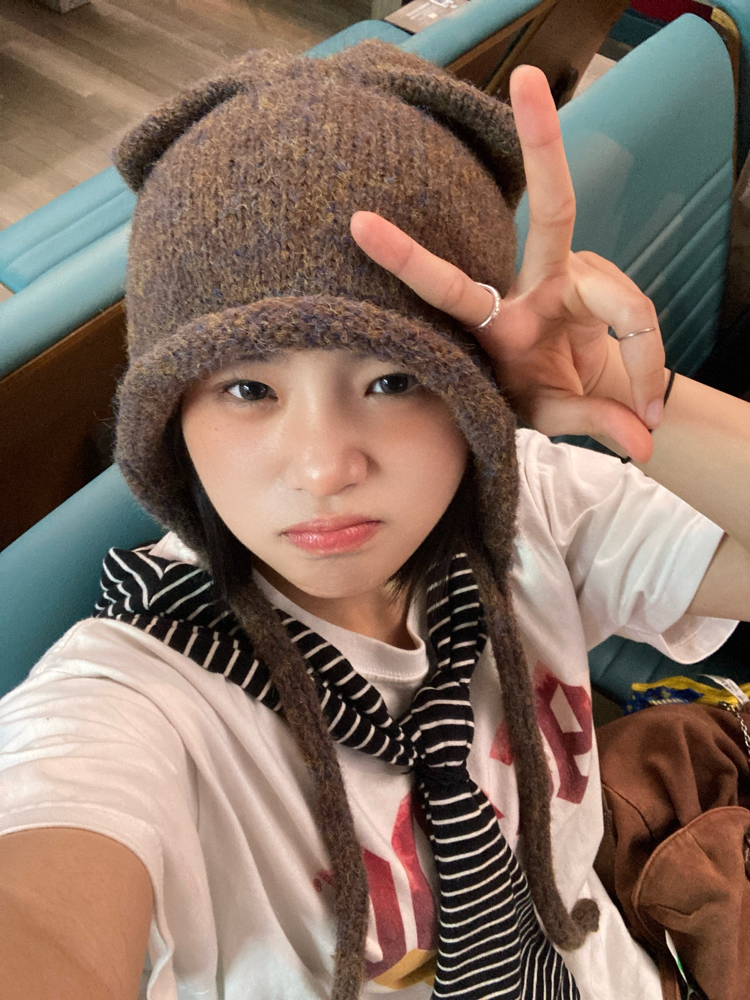
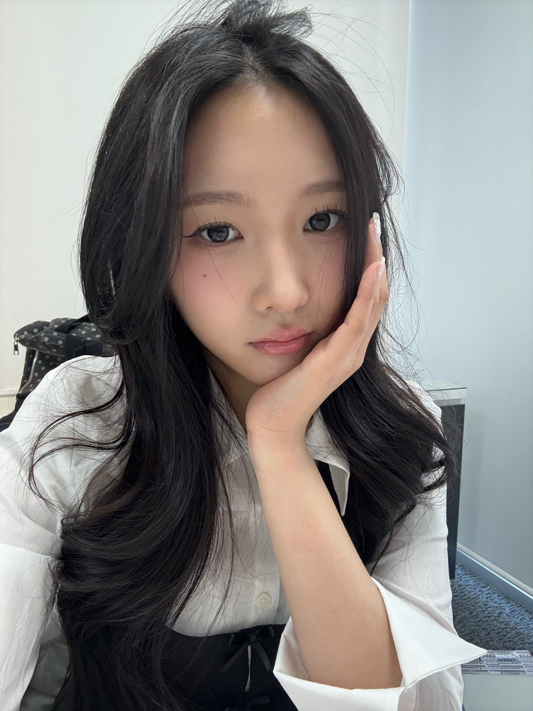
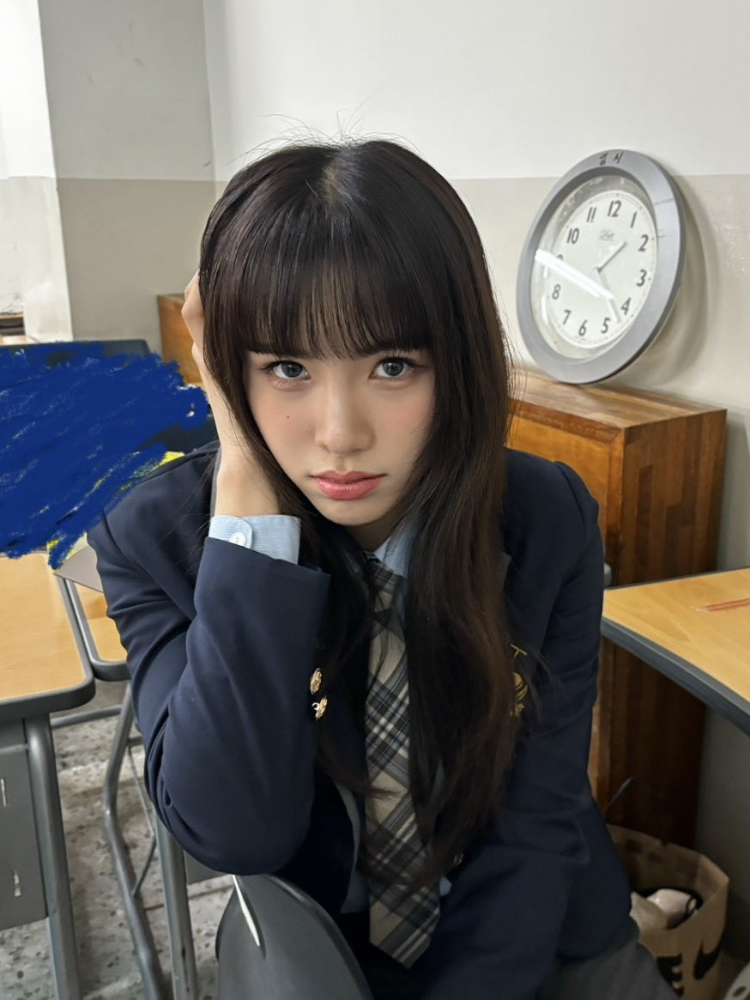
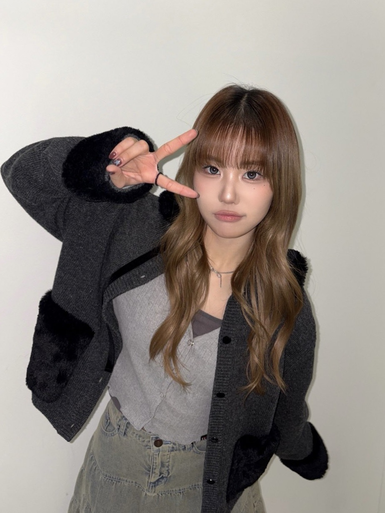

BIOGRAPHY
YOUNG
POSSE（ヤングパッシ）は、2023年にデビューした韓国の5人組ガールズグループ。DSPメディア、BEATSエンターテインメント所属。公式ファンダム名はTELEPOSSE（テレパシー）。
2023年6月22日、DSPメディアは下半期にグループをデビューさせると発表し、グループはBEATSエンターテインメントと協力してプロデュースを行うとした。
グループ名の「YOUNG
POSSE」は、「できる」「可能だ」という意味のラテン語であるPOSSEに着目し、文字通り「目的を持って集まった若い集団」を意味する。私よりは私たち、1人よりは皆が一緒に力を合わせてこそ望むことを叶えることができるという力強い抱負と強烈な意志が含まれている。
MEMBER
SUNHYE

- 仮名：チョン・ソネ
- ハングル：정선혜
- 英字：Jung Sunhye
- 誕生日：2004年4月12日（21歳）
- 出身地：韓国 京畿道楊平郡
- ポジション：リーダー
- MBTI：INTP
- 好きなもの：犬、冬、黄色、一人でいること
- 犬の名前：Ttori
YEONJUNG
- 仮名：ウィ・ヨンジョン
- ハングル：위연정
- 英字：Wi Yeonjung
- 誕生日：2004年9月1日（20歳）
- 出身地：韓国 ソウル特別市龍山区梨泰院
- MBTI：INTP
- ポジション：メインダンサー

JIANA

- 芸名：ジアナ／지아나
- 仮名：ノ・ジヒョン
- ハングル：노지현
- 英字：Noh Jihyun
- 誕生日：2006年2月2日（19歳）
- 出身地：韓国 釜山広域市東萊区
- MBTI：ISFP
- ポジション：メインボーカル
- 犬の名前：サラン
DOEUN
- 仮名：キム・ドウン
- ハングル：김도은
- 英字：Kim Doeun
- 誕生日：2007年12月24日（17歳）
- 出身地：韓国 ソウル特別市江西区禾谷洞
- MBTI：INTP
- 好きなキャラクター：リラックマ

JIEUN

- 仮名：ハン・ジウン
- ハングル：한지은
- 英字：Han Jieun
- 誕生日：2009年11月5日（15歳）
- 出身地：韓国 ソウル特別市城東区杏堂洞
- MBTI：ESTJ